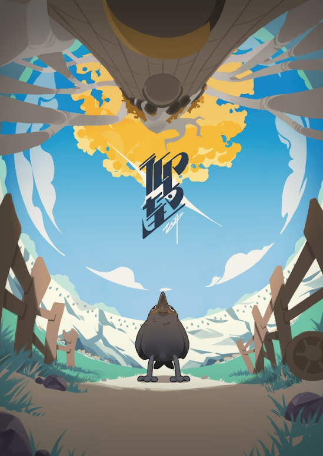
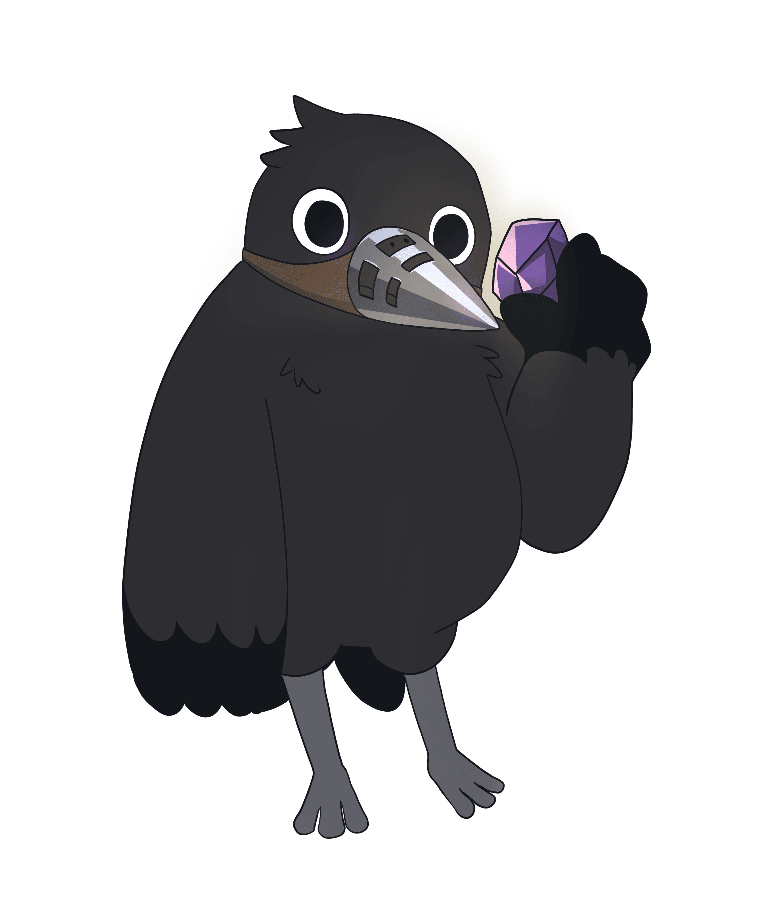
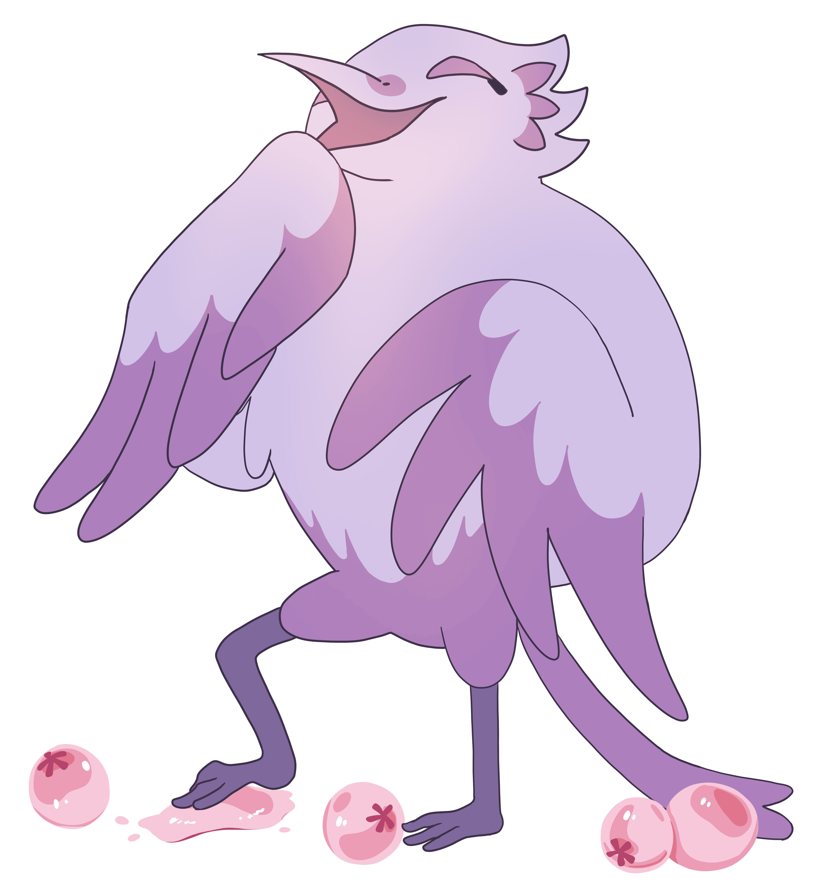

故事大綱
在世界樹的社會中，採礦鳥終日於礦洞中勞作，以礦石換取果實度日，並失去了飛翔的自由。
一名年輕的採礦鳥，在看見飛行比賽的傳單後，燃起改變命運的希望。
雖然最終未能奪冠，但他的勇氣與堅持，為被階級束縛的天空帶來新的希望。

在世界樹的社會中，採礦鳥終日於礦洞中勞作，以礦石換取果實度日，並失去了飛翔的自由。
一名年輕的採礦鳥，在看見飛行比賽的傳單後，燃起改變命運的希望。
雖然最終未能奪冠，但他的勇氣與堅持，為被階級束縛的天空帶來新的希望。
在團隊中，我主要負責分割和上色的工作。 原畫和清線完成後，我會透過分割補足中間動作， 讓角色的動作更順暢、更有連貫性，同時修正像滑步這類細節問題。 接著進行上色，先完成底色鋪設，再依照畫面的光源加上光影效果， 讓角色和場景更有立體感，也能營造出更完整的畫面氛圍。

主角。 夢想重新獲得飛翔自由。

原本對於主角要參加比賽抱有懷疑， 但看到主角努力後，也漸漸改觀

在比賽最後故意害主角失去比賽資個